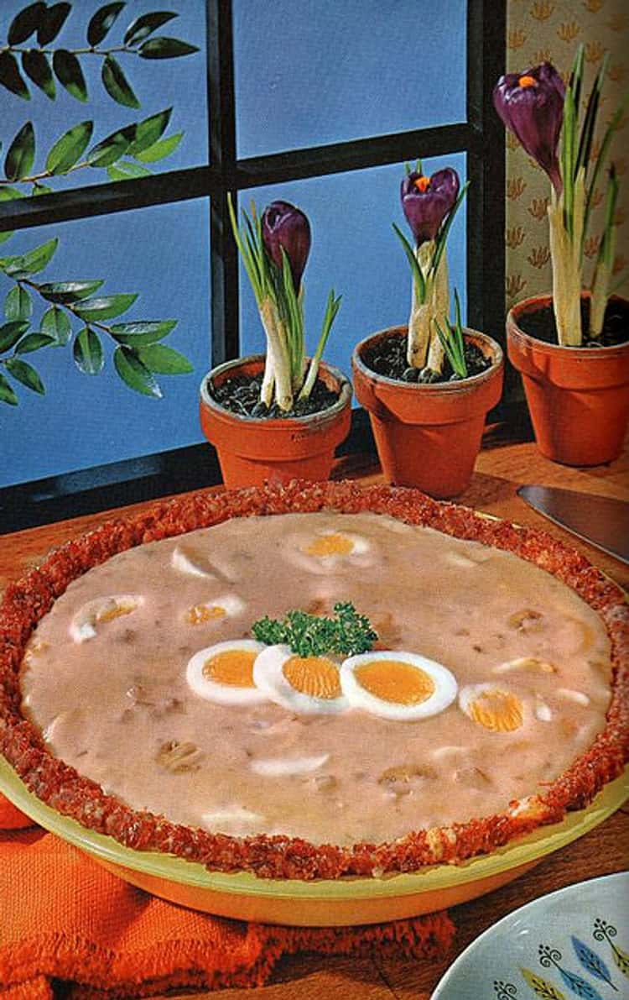

Creamed Eggs in Corned Beef Crust

What to expect
Pie crust of white bread, flaked corned beef filling with a mushroom soup, cream and hard boiled eggs.
Ingredients
- 1 can of corned beef
- 1 slice of white bread, crumbed
- 1 egg, lightly beaten
- 6 hard cooked eggs, sliced
- 1 can mushroom soup
- 1/4 cup milk or cream
- 1 can whole mushrooms
- 1 teaspoon of Worcestershire sauce...the secret ingredient!
Steps
- Flake corned beef with fork. Add bread crumbs and eggs, mix well. Press mixture into an 8 inch plate
- Combine soup, milk or cream, mushrooms and the secret ingredient, Worcestershire sauce. Heat over simmering water
- 15 minutes before serving, bake pie crust in 350F oven for 15 minutes. Reserve a few egg slices for garnish and add remaining eggs to the sauce
- Remove pie from oven, pour hot creamed eggs and sauce into it and garnish with reserved egg slices and parsley. Serve immediately.
Recipe Home